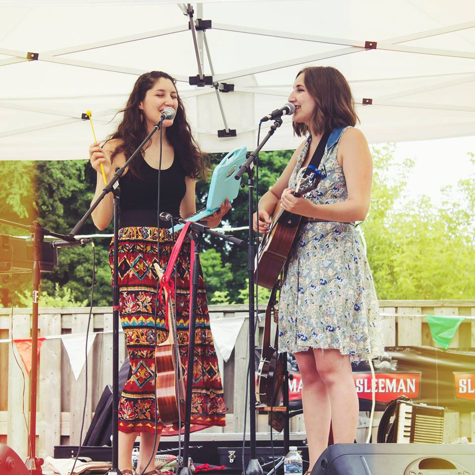
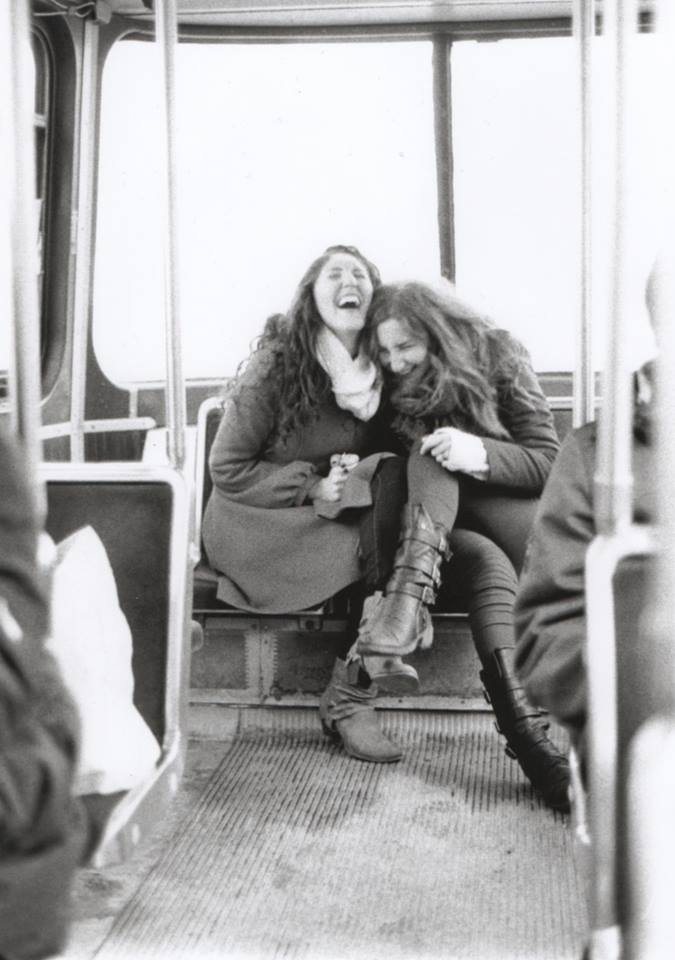

Article by Vjosa Isai Photos provided by Anita Cazzola
Uploaded on February 2, 2015
Anita Cazzola thought she was writing a love song. Although not exactly sure who it was for, she wanted to capture the feeling of missing a loved one and wishing to hear their promise to be, as the song goes, “Home for the Weekend”. The 19-year old played it for her older sister Liv, who had returned to visit their hometown of Guelph, Ontario after working in Toronto over the summer. “The song stemmed from me missing her and wanting her to come home. We kind of realized it then, and I was like, ‘This is kind of about you’,” Anita says. They played it together and ended up in tears.
Liv and Anita’s sisterly love and best-friendship are palpable. The warmth of their relationship as family and musicians also comes across sonically through the music of their folk band, The Lifers.
Liv, 21, is completing a double major in Business and Popular Music at the University of Western Ontario. She’s come to Toronto for a student work placement, a move that has once again reunited her with sister and Ryerson Interior Design student, Anita. Living together for the first time since forming their band last year has presented the sisters with new opportunities, such as a chance to perform the downtown bar circuit.
|
Although Liv and Anita played at social events in their hometown before officially becoming a band, living in different cities made it difficult for them to work on their music. In that time, the sisters focused on pursuing their own musical interests, only deciding to join forces in order to play at the Musicians@Ryerson Battle of the Bands concert last March.
Liv and Anita, who had previously performed with a high school pop band called Detour, wanted to transform their image since switching over to the folk genre before the concert. “In preparation for some shows coming up in the new year, and the winter of last year especially...we wanted to re-identify ourselves with our new sound,” says Anita. For the sisters, these changes felt natural and went mostly undetected. After winning the Battle of the Bands, they carried on making music together, doing local gigs, and even won a songwriting contest at Western. The prize was a studio recording of up to four songs, which the girls managed to pull off on short notice. “You can’t expect a two day session to be perfect, but we kind of accepted that as part of the growing process,” Anita adds. This growth would soon materialize for The Lifers. “It’s like when you press fast forward on your remote control, but it’s slow motion,” says Liv. In less than a year, perhaps without even fully realizing it, The Lifers had drifted off the dock. The time had come to “Set the Sails”, coincidentally the title of their debut EP. It was the nature of this journey that inspired the band’s name. |

Spotlight Editor in Chief
Vjosa Isai
vjosa.isai@ryerson.ca
Want to get your time under the lights? Are you a writer looking to join the Artist Spotlight initiative? E-mail us at music@ryerson.ca to see how!